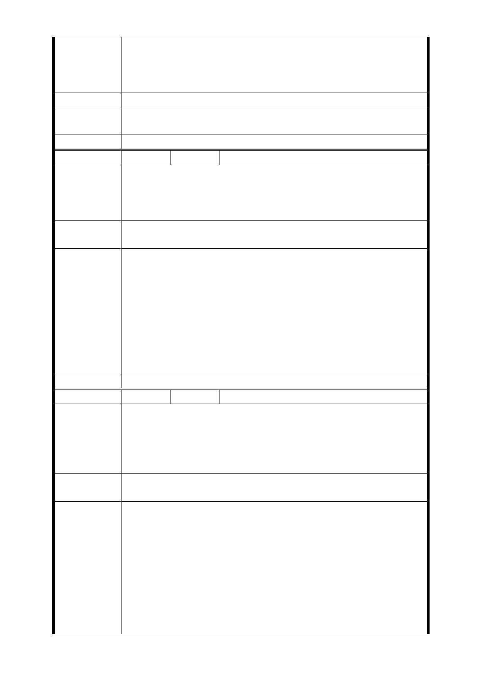

四、捷運開發乃是百年大計，主事者應有長遠、宏觀的視野
，並以維護多數民眾的公共福祉為念。本社區全體住戶再度
懇請市府慎重處理此案，合理衡酌相關利害當事人之權益，
以不負人民所期待。
建議辦法
市府回應
意見
同編號捷五－1 回應意見。
委員會決議 同編號交一－1 委員會決議。
編 號 捷六-1 陳情人 高○智
雨蔽、陽台、機房有算公設嗎？
陳情理由
有分車位嗎？至少要一個機車位。
開始施工時，是否請專業人士監工、建材、水電配線，以防
偷工減料。
建議辦法
所有開會紀錄，各位是否簽字背書，給我們詳細的資料，清
楚明確簡單，不要一堆算式跟專有名詞。
1.參與聯合開發後所分得大樓之坪數包含陽臺和公共設施。
2.停車位之規劃依都市計畫法之相關規定設置法定停車空間
；其停車位分配比例係依一般不動產方式持有，且因停車位
市府回應
意見
之價值將計入開發總價值中，由各參與開發者分配，未來若
土地所有人想取得車位，則需以可分配權值折算。
3.103 年 9 月 16 日第四次專案小組委員審查意見：LG03 車
站調整車站位置改設於忠義國小，取消原車站位置捷五、捷
六土地開發區，使用忠義國小學校用地，並增設捷十土地開
發區（面積 1199 平方公尺）。
委員會決議 同編號交一－1 委員會決議。
編 號 捷六-2 陳情人 謝○常、林○麗
1. 69 年 營 業 且 領 有 營 業 執 照 （ 北 市 建 一 商 號 (70) 字 第
125082 號）
陳 情 理 由 2. 西藏路 143 號為妻子林秀麗所有。
3. 經營藥局為繼續服務地方(慢性病處方箋調劑)給在地老
人方便。
建議辦法
以西藏路 141 號 1 樓、西藏路 143 號 1 樓二間店面換取保留
一樓店面一間。
1.有關土地開發區(捷)基地開發規模已考量未來都市發展予
以提高，經本府目前研析原則係以土地開發區（捷）基地，
依原建築容積(原容如低於法容以法容為準)+0.5 倍法容+捷
市府回應
意見
運獎勵之原則辦理。惟仍應以「一坪換一坪」為上限（平均
值）。
2.開發後的區位樓層之選擇，由原土地所有人選定樓層、區
位，如 2 人以上選擇之樓層、區位相同時則以抽籤決定。
3.103 年 9 月 16 日第四次專案小組委員審查意見：LG03 車
站調整車站位置改設於忠義國小，取消原車站位置捷五、捷
- 113 -